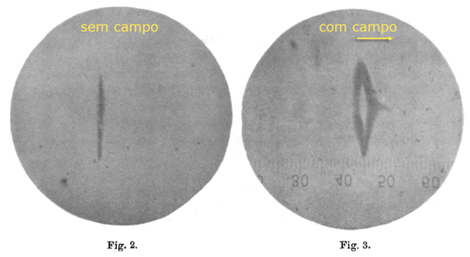

Lab3 - Experimento Stern-Gerlach
Neste notebook aprenderemos um pouco mais sobre o famoso experimento de Otto Stern e Walther Gerlach, em 1922, que, além da sua importância histórica, ilustra bem como estados quânticos são diferentes de estados clássicos.
Mais do que simplesmente apresentar os resultados, iremos simular, de fato, o experimento aqui, pelo menos os elementos mais fundamentais, para mostrar como os resultados são diferentes entre os sistemas clássico e quântico.
Para concentrar a discussão na física, ao invés da programação, vou usar o QuTiP (Quantum Toobox in Python), um framework para cálculos quânticos em Python. Isso permitirá usar ferramentas profissionais que definem e encapsulam em comandos simples toda a álgebra que aprendemos nas aulas, de uma forma mais direta e prática. Também é uma oportunidade de lhes apresentar mais uma ferramenta computacional bastante útil.
Depois da aula você poderá explorar o notebook e a documentação online do QuTiP para aprender mais, se tiver interesse.
Créditos: na preparação desta atividade eu usei como base um dos tutoriais do QuTip, apesentado na EuroSciPy 2019 por Simon Cross, disponível neste link.
O experimento de Stern-Gerlach
Aparato experimental

Fonte: http://hyperphysics.phy-astr.gsu.edu/hbase/spin.html
Veja também:
- https://plato.stanford.edu/entries/physics-experiment/app5.html.
- https://en.wikipedia.org/wiki/Stern-Gerlach_experiment#History
para mais detalhes e informações sobre a história desse importante experimento.
Carregando o QuTiP
Carregando as bibliotecas necessárias em Pyton...
%matplotlib inline
from collections import namedtuple
import matplotlib.pyplot as plt
import numpy as np
import qutip
from qutip import Bloch, ket
# About QuTip -- visit hhtp://qutip.org
qutip.about()
QuTiP: Quantum Toolbox in Python
================================
Copyright (c) QuTiP team 2011 and later.
Original developers: R. J. Johansson & P. D. Nation.
Current admin team: Alexander Pitchford, Paul D. Nation, Nathan Shammah, Shahnawaz Ahmed, Neill Lambert, and Eric Giguère.
Project Manager: Franco Nori.
Currently developed through wide collaboration. See https://github.com/qutip for details.
QuTiP Version: 4.4.1
Numpy Version: 1.18.1
Scipy Version: 1.4.1
Cython Version: 0.29.17
Matplotlib Version: 3.1.3
Python Version: 3.7.4
Number of CPUs: 2
BLAS Info: INTEL MKL
OPENMP Installed: False
INTEL MKL Ext: True
Platform Info: Windows (AMD64)
Installation path: C:\Users\SergioMuniz\Anaconda3\lib\site-packages\qutip
==============================================================================
Please cite QuTiP in your publication.
==============================================================================
For your convenience a bibtex reference can be easily generated using `qutip.cite()`
Esfera de Bloch
Representação do vetor de estado |\psi\rangle no espaço SU(2): spinors & q-bits
z = np.array([0, 0, 1])
mu = np.array([0, 1, 0])
bloch = Bloch()
bloch.zlabel=("z", "")
bloch.add_vectors([z, mu])
bloch.show()
Exemplo de evolução temporal de vetores de Bloch
Simulando Stern-Gerlach no Python!
# Definições gerais comuns
Direction = namedtuple("Direction", ["theta", "phi"])
def random_direction():
""" Generate a random direction. """
# See http://mathworld.wolfram.com/SpherePointPicking.html
r = 0
while r == 0:
x, y, z = np.random.normal(0, 1, 3)
r = np.sqrt(x**2 + y**2 + z**2)
phi = np.arctan2(y, x)
theta = np.arccos(z / r)
return Direction(theta=theta, phi=phi)
def plot_classical_results(atoms, spins):
fig = plt.figure(figsize=(18.0, 8.0))
fig.suptitle("Stern-Gerlach Experiment: Classical Outcome", fontsize="xx-large")
ax1 = plt.subplot(1, 2, 1, projection='3d')
ax2 = plt.subplot(1, 2, 2)
b = Bloch(fig=fig, axes=ax1)
b.vector_width = 1
b.vector_color = ["#ff{:x}0ff".format(i, i) for i in range(10)]
b.zlabel = ["$z$", ""]
b.add_vectors(atoms)
b.render(fig=fig, axes=ax1)
ax2.hist(spins)
ax2.set_xlabel("Z-component of spin")
ax2.set_ylabel("# of atoms")
def plot_quantum_results(atoms, spins):
fig = plt.figure(figsize=(18.0, 8.0))
fig.suptitle("Stern-Gerlach Experiment: Quantum Outcome", fontsize="xx-large")
ax1 = plt.subplot(1, 2, 1, projection='3d')
ax2 = plt.subplot(1, 2, 2)
b = Bloch(fig=fig, axes=ax1)
b.vector_width = 1
b.vector_color = ["#{:x}0{:x}0ff".format(i, i) for i in range(10)]
b.add_states(atoms)
b.render(fig=fig, axes=ax1)
ax2.hist(spins)
ax2.set_xlabel("Z-component of spin")
ax2.set_ylabel("# of atoms")
Simulando o caso Clássico
# Simulation of expected results in the classical case
classical_up = np.array([0, 0, 1])
def classical_state(d):
""" Prepare a spin state given a direction. """
x = np.sin(d.theta) * np.cos(d.phi)
y = np.sin(d.theta) * np.sin(d.phi)
z = np.cos(d.theta)
return np.array([x, y, z])
def classical_spin(c):
""" Measure the z-component of the spin. """
return classical_up.dot(c)
def classical_stern_gerlach(n):
""" Simulate the Stern-Gerlach experiment """
directions = [random_direction() for _ in range(n)]
atoms = [classical_state(d) for d in directions]
spins = [classical_spin(c) for c in atoms]
return atoms, spins
atoms, spins = classical_stern_gerlach(1000)
plot_classical_results(atoms, spins)

>> Resultado Experimental !!

Simulando o caso Quântico
# Simulation of expected results in the quantum case
# usando a biblioteca qutip
up = ket('0')
down = ket('1')
def quantum_state(d):
""" Prepare a spin state given a direction. """
return np.cos(d.theta / 2) * up + np.exp(1j * d.phi) * np.sin(d.theta / 2) * down
def quantum_spin(q):
""" Measurement the z-component of the spin. """
a_up = (up.dag() * q).tr()
prob_up = np.abs(a_up) ** 2
return 1 if np.random.uniform(0, 1) <= prob_up else -1
def quantum_stern_gerlach(n):
""" Simulate the Stern-Gerlach experiment """
directions = [random_direction() for _ in range(n)]
atoms = [quantum_state(d) for d in directions]
spins = [quantum_spin(q) for q in atoms]
return atoms, spins
atoms, spins = quantum_stern_gerlach(1000)
plot_quantum_results(atoms, spins)

Leituras complementares
-
QuTiP documentation [ http://qutip.org/ ]
-
History of the Stern-Gerlach experiment [ https://plato.stanford.edu/entries/physics-experiment/app5.html ]
-
Quantum Computing for the Determined by Michael Nielsen [ http://michaelnielsen.org/blog/quantum-computing-for-the-determined/ ]